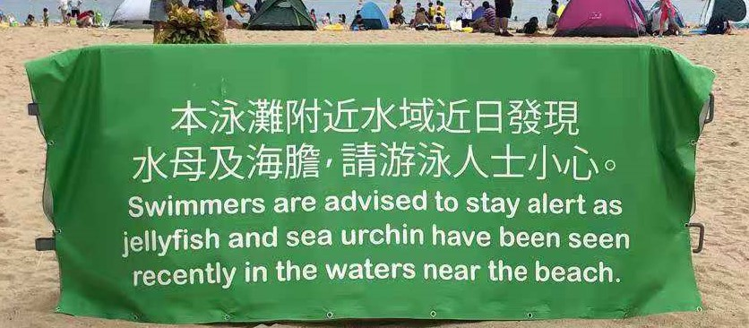

Activity Logs
On 03.10.2021, our team went to the Lung Mei Beach a public man-made beach opened in 23.06.2021. Although the wether was not pleasent, there are many visiters enjoy themselves on the beach. There are also severl noticeable issues we disvoered on the beach.
 One of the most conspicuous things on the beach is the notice from the management department of the beach. It reminds people to be aware of sea urchins and jellyfishes, which might hurt people. Indeed, according to some reports, many people stabbed by sea urchins on Lung Mei Beach since its open.
 Except for the notice, garbage on the beach is also merit attentions, which not only degrade the appearance of the beach, but can also harm marine lives.
There are some rubbish bins, however, it is far for activity areas.
Therefore, though people might be aware of collecting their garbage and drop it into rubbish bins, they sometimes unconsciously drop some plastic bags.
Except for the notice, garbage on the beach is also merit attentions, which not only degrade the appearance of the beach, but can also harm marine lives.
There are some rubbish bins, however, it is far for activity areas.
Therefore, though people might be aware of collecting their garbage and drop it into rubbish bins, they sometimes unconsciously drop some plastic bags.